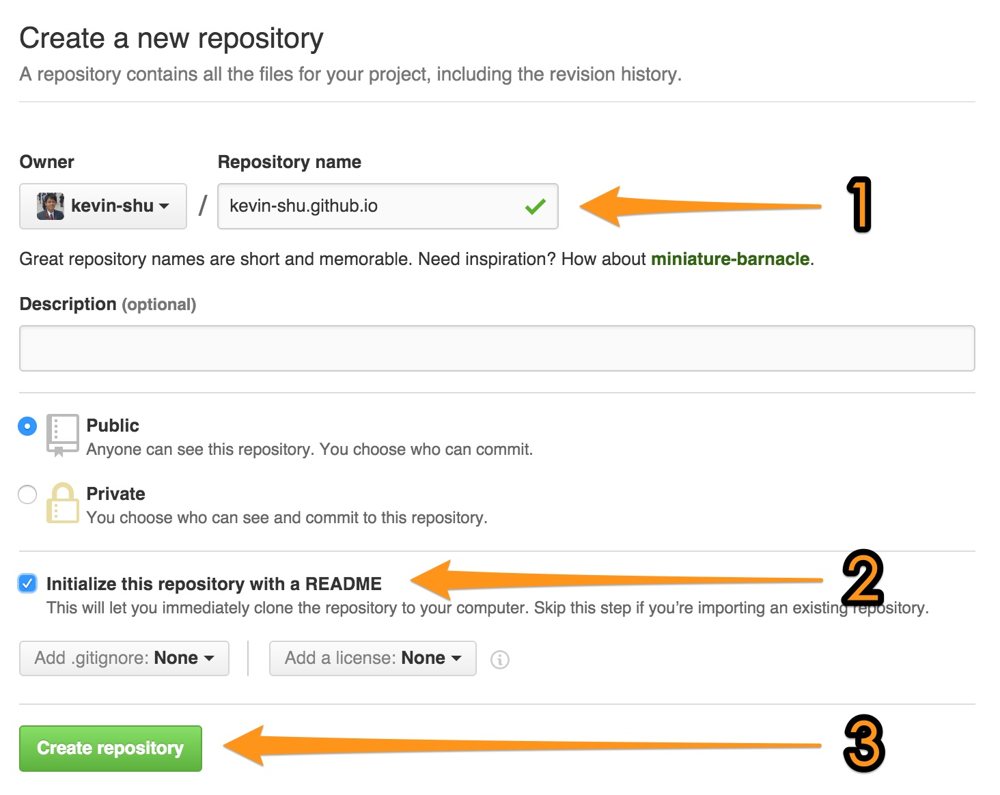
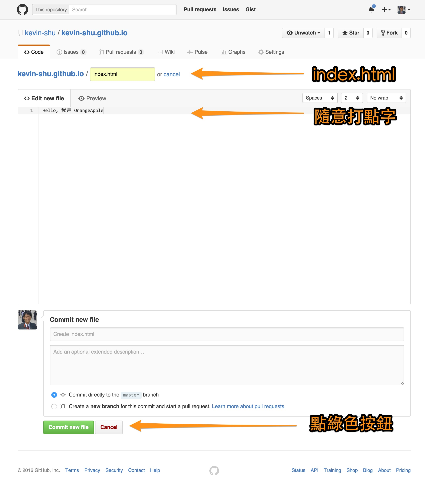

前置作業
在開始之前，我們得來複習一下 Github 的使用
1. 登入 Github
日後的課堂操作請務必使用 Google Chrome
2. 建立新專案 (Repo)
建立新專案
(教學: https://goo.gl/74ycGE)
- 專案名稱請取做
<帳號名稱>.github.io
(例如：orangeapple.github.io)
- 勾選“產生README”的選項
- 確認 (Create repository)

- 在專案頁面點選“new file”
- 將檔案命名為 “index.html”
- Type some words.
- Click the "Commit new file" button (The green one)

- And now you should see these apear at the url:
http://<帳號名稱>.github.io
(Ex. http://kevin-shu.github.io)
小提示:
如果沒有看到，請確認是否已經在 Github 上進行 Email 認證了